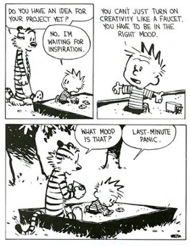
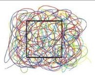

Let’s generate some new ideas. Or make a needed decision. Or how about solving a problem that’s been hanging around.
If you’re an artist, go on and create the new painting, write the brilliant piece, choreograph the dance.
If you’re not an artist, hey no biggie, so what? You’re in charge here. Go ahead, do it anyway.
Right now.
No?
Well, OK, maybe genius will come in the shower, or in the middle of the night, or on a walk. And maybe you’ll even remember it in the morning.
It’s slippery though- even when it's written down, it may still irretrievably slide away.
As it pleases.
How weird that we haven’t noticed that we can’t generate ideas on our command, that inventiveness is not ours, that we are not the ones who solve problems.
How weird to not notice that we have to get lucky, both to have inspiration show up in the first place, and then to hold on to it once it does.
Yes we do say, “I painted that,” or “I had an idea,” or “I wrote a book.” And yes we do take credit for bringing it and doing it.
Even though the idea that we are the ones creating and solving so often comes with failure, stress, lack of motivation, writer’s block, decision-stuckness, and apparently unsolvable problems.
Oh yay, give us more o’ that.
Perhaps we’re not the all-powerful Oz after all.
Because as it turns out, zero ideas actually come from us.
Unless we’re counting judgment, dissatisfaction, disapproval, and criticism of whatever ideas do come through.
All of which is the opposite of inspiration. And paralyzing. And can even make us feel like an imposter.
Which happens to be true, if we think we are the ones who come up with brilliance.
So.... what does send ideas, if it’s not us? What is in charge of creativity?
Well whatever it is, it’s Not-Me.
It’s biiiiiiiiiiiig. Way bigger than li'l ol' us.
Not to mention genius, with unlimited ingenuity. Because there’s always more; it never runs out.
I mean, it would seem we’re not even necessary.
Now, the ego may pout at seeing this.
But luckily for us, ideas have to have a vehicle. They need to occur to something, or else....
Nothing.
Creativity needs our hardware. It needs us to implement.
So we’ve got a partnership, a collaboration.
Creativity provides the magic, and humans provide the molding of the clay, the moving of feet, the typing things out.
Yes we’re just being driven.
But at least we get to go for the ride.
And at least we’re in good hands. Because this driver offers something far bigger, with infinite perspective, infinite options, and far more wisdom than we're ever going to have.
Ok fine, why does this matter?
Well, besides that it feels so much better when we see that we’re not to blame when ideas don't come...
For those readers who care about having some understanding of consciousness...
There can be many ways to access this enlightenment thing.
I mean, maybe we don’t have to sit cross-legged in meditation chanting OM through third eyes. Maybe we don’t have to inquire into every thought, or memorize every word and hiccup Nisargadatta ever uttered.
Maybe there are other, possibly even better, ways out of the personality, out of the self.
Maybe creativity offers a different kind of meditation, a different kind of doorway.
Because what might happen when we’re able to get the Me out of the way, and let something bigger do its thing?
On its own terms, unimpeded by human shoulds and shouldn’ts and deadlines and clocks?
What might happen when we can set aside notions that we are The Creators, and instead let something else blow vision and wisdom and imagination and solutions right on through us, like a flute?
Vehicle, not driver.
Who knows? We might find that's peaceful. Expansive. Maybe even blissful.
We might find relief from self-blame and haranguing voice.
We might find gratitude for smallness, for unimportance, and for the simple ability to be driven...
By dazzling enormity.
So it could be fun to get in the passenger side, and see where this baby goes.
Because pretty likely, it’s somewhere we didn’t know how to get to,
Ourselves.
Click here to get your every week.
"Art is Consciousness expressing Itself unimpeded by all those fallacious appearances of a “Me”. The body is merely a tool through which Consciousness speaks." --Ramesam Vemuri

